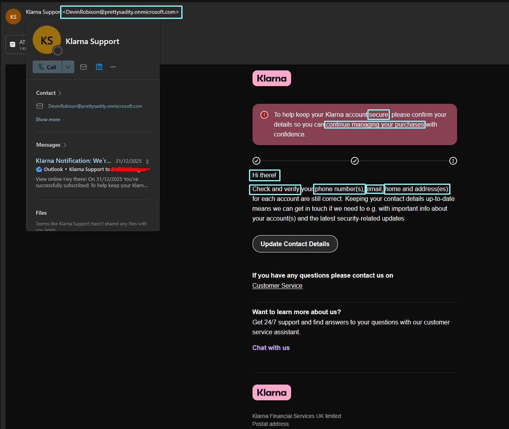
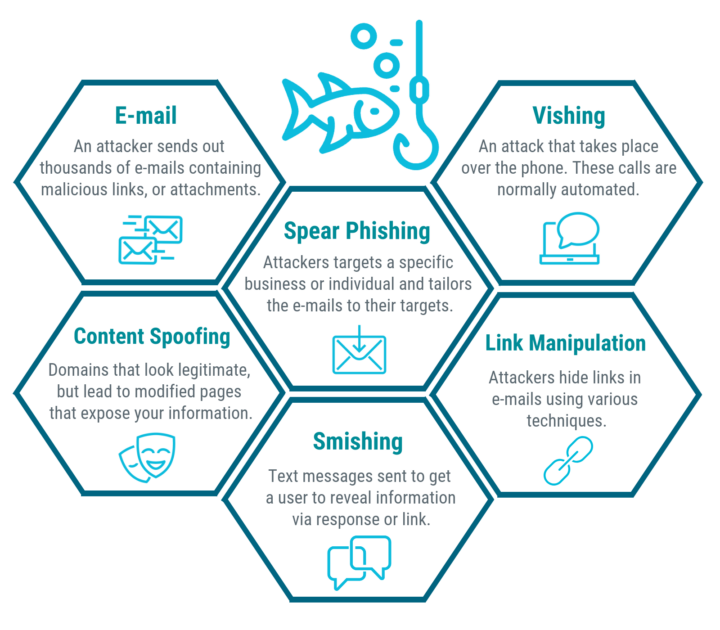

Warning Signs to Watch For
- Mismatched or suspicious sender email address
- Urgent or threatening language ("Your account will be closed")
- Generic greetings ("Dear Customer") instead of your name
- Links that don't match the claimed organisation's domain
- Requests for sensitive information via email or message
- Spelling or grammatical mistakes, or poorly written communication
- Unexpected attachments, especially with strange names or extensions, particularly .exe files
What Is a Phishing Scam?
Phishing is one of the most common, and most public, forms of scams that circulate our internet today. Phishing attacks typically involve an attacker impersonating a trusted organisation or individual in order to trick victims into revealing sensitive information such as login credentials, financial details, or personal data. There are many methods through which phishing is carried out - it can be targeted to individuals or generic and mass produced, and can be delivered through many methods such as email, texts, calls, and social media messages.
According to zensec, an estimated 3.4 billion phishing emails are sent every day, and in 2024 cost an estimated $70 million. Because of the rapid rate at which they can be produced, they are by far the biggest cyber risk in the world right now, and are a major contributor to cyber crime, often being the first step in a multi-layer attack scheme.

Phishing emails are still the most common, and often the easiest to spot. As shown in the above example, there are numerous telltale signs that can help identify fraudulent emails.
Firstly, the email comes from "DevinRobinson@prettysadity.onmicrosoft.com" - doesn't exactly seem like a legitimate Klarna email address does it?
Secondly, the email tries to urge the user to act fast - stating they won't be able to continue managing their purchases, and using commands like "check" and "verify". This sort of language plays on our psychology as it urges us to make decisions without proper thought, leading to rash and poor decisions.
Thirdly, the email does not call the user by name - instead using a generic "Hi there!" insinuating that this is a mass-produced message.
Common Types of Phishing
Email phishing
Emails are the most common form of phishing, and are often mass-produced and easy to spot. They typically involve fake sender addresses that mimic legitimate organisations, urgent language that pressures the recipient to act quickly, and links that lead to fake login pages designed to steal credentials. These emails may also contain attachments that, when opened, can install malware on the victim's device. This is why as a best practice, if an email looks suspicious, it's best to avoid opening the email in the first place, and to never download an attachment or file from an email.
Spear phishing
These are attacks that focus on targetting individuals specifically. This may include using their full name, job role, specific interests, or other personal details to make the message seem more convincing. These details are often scraped from social media profiles, using websites like Instagram, X (formerly Twitter), LinkedIn and others.
These are particularly hard to deal with because their intent is to be personable and convincing, and are much higher quality fakes than generic emails like the above example.
The primary goal of these scams is to trick the victim into providing sensitive information such as login credentials, bank details or personal identification. This often involves a fake website that mimics a legitimate website, such as a fake bank login page or social media site.
The primary way to spot these is checking the links that are given - hovering over hyperlinks will show the real URL in the bottom corner of the scren - if it does not match the organisation's domain, then it is likely a scam. For example, a link that claims to be from "Amazon" but leads to "amaz0n-login.com" is a strong indicator of phishing. Often, these websites won't even have convincing URLs to begin with, but higher effort fakes may use similar domains.
Smishing (SMS phishing)
Smishing, or "SMS Phishing", is a type of phishing attack that occurs through text messages. Attackers send fraudulent messages that appear to be from reputable sources such as delivery services, banks, or popular retailers. These messages often contain urgent language, prompting recipients to click on a link, provide personal information, or even make a payment to resolve an issue. For example, a common smishing scam involves fake parcel delivery notifications that claim there is an issue with the delivery and require the recipient to click a link to resolve it. Often, like emails, these will be generic and non-tailored, so they will not mention any personal details, thus reinforcing that it is a scam.
As with most phishing attacks, the best method to defend yourself is to use applications and websites directly, rather than trust unsocilited messages. In the modern age, apps are always the primary hub for all information, and unsolicited messages should always be treated with caution.
Vishing (Voice phishing)
Vishing, or "VOIP Phishing", is a type of phishing attack that occurs over the phone. Attackers impersonate trusted entities such as banks, government agencies (like HMRC), or tech support representatives to trick victims into revealing sensitive information. They may use caller ID spoofing to make it appear as though the call is coming from a legitimate source. Common tactics include claiming there is an urgent issue with the victim's account, offering a prize or reward, or requesting verification of personal information. As with other forms of phishing, it's important to be cautious and verify the identity of the caller before sharing any information.
These are particularly common with delivery servicesd like DHL, FedEx, Royal Mail etc. as eCommerce grows and deliveries become more pertinent to our daily lives. These will often claim to be from the delivery company, and will say there is an issue with the delivery that requires the user to click a link, provide information, or even pay money to avoid some kind of fee or tax.
When it comes to these kind of attacks, the primary defense method is to treat all unsolicited messages with suspicion, and to verify any claims through official channels. For example, if you receive a text claiming to be from your bank about an issue with your account, it's best to ignore the message and contact your bank directly or check on your local app. Banks will rarely ever communicate through direct message or call services due to the existence of apps. Similarly, for delivery notifications, it's safer to go directly to the delivery company's website or the app you used to order the item, and enter your tracking number there, rather than clicking on a link in a text message.

What to Do If You've Been Targeted
How to Protect Yourself
Verify the Sender
Always check the email name first - look for misspellings, unusual email domains or names, or generic names
Hover Before You Click
Hovering on a hyperlink will display the true link in the bottom of your screen. If it says something like "tinyurl" then use link unshorteners like https://unshorten.it/ to check the true intention.
Enable Two-Factor Authentication
Many services offer you to use your phone number or an application to verify your identity. This is a critical step for security as it allows you to know if someone tries to access your account, and you can block them.
Use strong passwords
Passwords should be long, complex, and avoid common words. See further reading for tips.